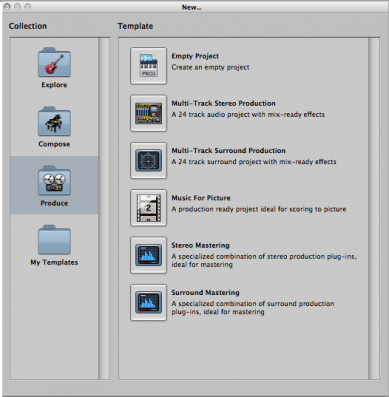
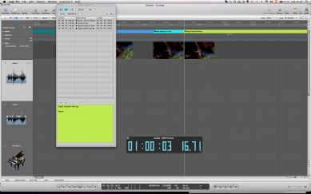

<?xml version="1.0" encoding="UTF-8"?><rss version="2.0"
	xmlns:content="http://purl.org/rss/1.0/modules/content/"
	xmlns:wfw="http://wellformedweb.org/CommentAPI/"
	xmlns:dc="http://purl.org/dc/elements/1.1/"
	xmlns:atom="http://www.w3.org/2005/Atom"
	xmlns:sy="http://purl.org/rss/1.0/modules/syndication/"
	xmlns:slash="http://purl.org/rss/1.0/modules/slash/"
	xmlns:itunes="http://www.itunes.com/dtds/podcast-1.0.dtd"
xmlns:rawvoice="http://www.rawvoice.com/rawvoiceRssModule/"
xmlns:googleplay="http://www.google.com/schemas/play-podcasts/1.0/play-podcasts.xsd"
>

<channel>
	<title>Sequencing &amp; Mockups &#8211; SCOREcastOnline.com</title>
	<atom:link href="." rel="self" type="application/rss+xml" />
	<link>http://www.scorecastonline.com</link>
	<description>Global Community for the Professional Media Composer</description>
	<lastBuildDate>Mon, 19 Jun 2017 08:43:18 +0000</lastBuildDate>
	<language>en-US</language>
	<sy:updatePeriod>hourly</sy:updatePeriod>
	<sy:updateFrequency>1</sy:updateFrequency>
	<generator>https://wordpress.org/?v=4.8</generator>
<!-- podcast_generator="Blubrry PowerPress/7.0.4 beta" mode="advanced" feedslug="feed" -->
	<itunes:summary>Global Community for the Professional Media Composer</itunes:summary>
	<itunes:author>Sequencing &amp; Mockups &#8211; SCOREcastOnline.com</itunes:author>
	<itunes:image href="../../../wp-content/plugins/powerpress/itunes_default.jpg" />
	<itunes:subtitle>Global Community for the Professional Media Composer</itunes:subtitle>
	<image>
		<title>Sequencing &amp; Mockups &#8211; SCOREcastOnline.com</title>
		<url>../../../wp-content/uploads/powerpress/sig-SCO.jpg</url>
		<link>../</link>
	</image>
<site xmlns="com-wordpress:feed-additions:1">29563098</site>	<item>
		<title>Scoring to picture in Logic 9 (part 2)</title>
		<link>../../../2013/02/21/scoring-to-picture-in-logic-9-part-2/</link>
		<comments>../../../2013/02/21/scoring-to-picture-in-logic-9-part-2/#comments</comments>
		<pubDate>Thu, 21 Feb 2013 14:37:37 +0000</pubDate>
		<dc:creator><![CDATA[Yaiza Varona]]></dc:creator>
				<category><![CDATA[Latest Resources]]></category>
		<category><![CDATA[SCOREcast University]]></category>
		<category><![CDATA[Sequencing & Mockups]]></category>

		<guid isPermaLink="false">../../../?p=1981</guid>
		<description><![CDATA[In this second part of the "Scoring with Logic Pro" article series, Yaiza Varona talks about a few more features of Logic that can really make your life easier!]]></description>
				<content:encoded><![CDATA[<p><em>Hello everyone and welcome back! In this second article  I would like</em><em> to talk about some more ways in which Logic can make your life easier when scoring for video such as importing ideas from other project files and using stems.</em></p>
<p>&nbsp;</p>
<p><!--
@page { margin: 2cm }
P { margin-bottom: 0.21cm }
--><em>Let&#8217;s assume tha</em><em>t the </em><i>director has given me some extra notes about my cue</i><em>&#8230;happens to all of us, right?</em></p>
<p>&nbsp;</p>
<p>Well it might come handy as well copy paste them in <b>Notes</b> inside Logic (whose quick access you can find in the Toolbar, upper corner right). This feature isn´t exclusive of the Picture template, but it is especially helpful when you want to have quick access to your spotting notes, director´s remarks, latest stroke of inspiration&#8230;</p>
<p>&nbsp;</p>
<p><i>I wish I could use some instruments and themes from the previous scene I scored</i></p>
<p>&nbsp;</p>
<p>Wish granted. One of the most useful features in Logic is <b>Import</b> in the <b>Browser</b> of Media (ta-da!)</p>
<p>From it you can import any input/output source, plugin, project settings, content of track etc from any previous project into your current one. This allows you to:</p>
<p>&nbsp;</p>
<ul>
<li>Import that theme or motif that you used two cues ago. No need to copy-paste!</li>
<li>Import those strings that you liked so much in that old project from two years ago that would go so nicely in this precise cue</li>
<li>Build subtemplates of you choice (winds, strings, brass, funky synths, ethic percussion), including plugins (those lush strings with that precise reverb) that you´ll be able to coordinate flexibly as if you were working with modules</li>
</ul>
<p><a href="../../../2013/02/21/scoring-to-picture-in-logic-9-part-2/browser-2" rel="attachment wp-att-1983"></a></p>
<p>&nbsp;</p>
<p><i>Stems, stems, stems&#8230;</i></p>
<p>&nbsp;</p>
<p>The stems and submixes that are often required when scoring to picture can be obtained by different procedures. Here we will see the one that should be faster!</p>
<p>It basically consists in assigning whatever channels of similar material you have to a particular bus, that you will later use as an independent track on its own.</p>
<p>Let´s say something in the line: tracks 1-7 go to bus 1 called Strings, 8-9 to bus 2 called Bass, 10 to 17 to bus 3 called Drums&#8230;you name it. By doing so you are creating some aux channels in the mixer devoted to stem groups. Now, to record those stems, we shall use the outputs of each of those submixes as input sources of new tracks in the arrange.<br />
So, in the Arrange we create new audio tracks using the buses as input (as many as buses we created and we choose the first and go ascending). Now, if we click Record for the whole length of the track, these new tracks shall contain the stems.</p>
<p><em>That&#8217;s all ladies and gentlemen! Logic is a very powerful program and we have only touched upon very basic concepts but hopefully you have found something in here that can help you get started.</em></p>
<p><em>Remember, if you have any tips about scoring in Logic Pro, why not share them below at the comments section??? </em></p>
<p>&nbsp;</p>
]]></content:encoded>
			<wfw:commentRss>../../../2013/02/21/scoring-to-picture-in-logic-9-part-2/feed/</wfw:commentRss>
		<slash:comments>16</slash:comments>
	<post-id xmlns="com-wordpress:feed-additions:1">1981</post-id>	</item>
		<item>
		<title>Scoring In PreSonus Studio One &#8211; MIDI Workflow</title>
		<link>../../../2013/01/31/scoring-in-presonus-studio-one-midi-workflow/</link>
		<comments>../../../2013/01/31/scoring-in-presonus-studio-one-midi-workflow/#comments</comments>
		<pubDate>Fri, 01 Feb 2013 07:22:57 +0000</pubDate>
		<dc:creator><![CDATA[Nikola Jeremić]]></dc:creator>
				<category><![CDATA[Recording & Prep]]></category>
		<category><![CDATA[SCOREcast University]]></category>
		<category><![CDATA[Sequencing & Mockups]]></category>
		<category><![CDATA[Technology]]></category>
		<category><![CDATA[Workflow]]></category>

		<guid isPermaLink="false">../../../?p=1955</guid>
		<description><![CDATA[Presonus Studio One power-user Nikola Jeremic takes you through the process of MIDI workflow in Studio One! ]]></description>
				<content:encoded><![CDATA[<p align="center">Part 3:  MIDI Composing</p>
<p>Okay, so we’ve covered the basic features of <b><i>Studio One</i></b>, and we know how to make a scoring template for composing.</p>
<p>Now it is time to show you the actual MIDI options and workflow of Studio One for composers.<br />
Before I start, I want to say one thing: Studio One is not designed for film composers, so its MIDI features lack the power of Logic or Digital Performer, because it is a relatively young DAW (Version 2.5).  But, I am pretty confident that Studio One 3 will bring on the “heavy weapons”.</p>
<p>Having said that, let’s get this thing started.</p>
<p><b>MIDI tracks</b> in Studio One are called <b><i>Instrument Tracks</i></b>. You add an Instrument track by <b><i>right clicking</i></b> in the <b><i>light gray area</i></b> to the left of the <b><i>project window</i></b>, and click the <i>Instrument Track</i> option in the drop menu.</p>
<p><a href="../../../2013/01/31/scoring-in-presonus-studio-one-midi-workflow/add-instrument-track" rel="attachment wp-att-1968"></a>If you want to add multiple Instrument Tracks, you <i>right click</i> again in the <i>light gray area</i>, and select the first option called <b><i>Add Tracks</i></b>. You can also use the default shortcut for this (T). Once you choose that, a window will open showing you different options of tracks and setups you wish to add. You can add the names of those tracks, the number of tracks you wish to add, types of tracks (in this case its instrument Tracks), color of the tracks, input of the tracks (you can instantly choose which MIDI controller you wish do use), and output of the tracks. Output is an actual MIDI instrument you wish to use with the Instrument Tracks (i.e. Kontakt). Once you’ve made your choice, click <b><i>OK</i></b>, and you’re good to go.<br />
<a href="../../../2013/01/31/scoring-in-presonus-studio-one-midi-workflow/multiple-tracks" rel="attachment wp-att-1969"></a>The principle of MIDI recording and editing is pretty much similar as in every other DAW out there. You record a track, double click on it, and a <b><i>piano roll</i></b> will open (F2 is the shortcut). You can edit almost everything in piano roll. All of the familiar tools are there: <b><i>point tool, split tool, paint tool (which has multiple options for writing), mute tool and listen tool</i></b>. Paint Tool kind of resembles of Photoshop paint tool, giving you options of writing freehand, sine wave, line, parabola, square wave etc.<br />
<a href="../../../2013/01/31/scoring-in-presonus-studio-one-midi-workflow/piano-roll" rel="attachment wp-att-1970"></a></p>
<p>There is also a dedicated Quantize tool with a lot of options (these are called actions in Studio One).<br />
<a href="../../../2013/01/31/scoring-in-presonus-studio-one-midi-workflow/quantize-tool" rel="attachment wp-att-1971"></a></p>
<p>I won’t go deep into the options, but one interesting thing is adding humanization to MIDI notes. Even though the MIDI clip is quantized, adding humanization will change the velocities of the notes and nudge quantization a bit.</p>
<p>All of the options and actions can be added and edited with the pain tool.<br />
Modulation can be hand drawn if you don’t have a keyboard with mod wheel.<br />
<a href="../../../2013/01/31/scoring-in-presonus-studio-one-midi-workflow/modulation" rel="attachment wp-att-1972"></a></p>
<p>Same thing goes for velocity, pitch, and you can add other parameters that you would like to use on the MIDI track.</p>
<p>You add them by <b><i>left clicking on the three dot tab</i></b>, on the left of velocity tab.<br />
Once you click there, a new window will open, showing you all of the MIDI parameters you can add to the track. It’s as simple as choosing an option and clicking on <b><i>Add button</i></b>.<br />
<a href="../../../2013/01/31/scoring-in-presonus-studio-one-midi-workflow/parameters" rel="attachment wp-att-1973"></a>You can also pick a <b><i>scale</i></b> to use for writing. On the left side of the piano roll, there is an option for choosing a scale. Just click on the <b><i>Root</i></b> of the scale to choose, and on the <b><i>snap value</i></b> to pick the type of scale you would like.<br />
<a href="../../../2013/01/31/scoring-in-presonus-studio-one-midi-workflow/scale" rel="attachment wp-att-1974"></a></p>
<p>There is one more cool option that Studio One has. Right clicking on the MIDI track in the project window, shows you all of the MIDI options that you can use on the track. I like especially the velocity and humanize options. Velocity option can come in handy.  For example, your note velocities are set like you wanted them, and you have copied a couple of same parts of the MIDI clip. You would like the next clip to play a bit louder than the previous one, but your note velocities are going up until 127. You right click on the clip, and change the velocity percentage of the clip a bit up, so it plays louder than the previous part. Or for example, the instrument is programmed to play different samples on different velocities, so you can use this option to change the velocity of the desired note that triggers the sample. The way I wrote it, sounds a bit confusing, but you’ll get the picture. <br />
<a href="../../../2013/01/31/scoring-in-presonus-studio-one-midi-workflow/right-click-options" rel="attachment wp-att-1975"></a></p>
<p>And that is pretty much it…</p>
<p>I hope these few posts are, and will be, of help to you in your future exploration of PreSonus Studio One.</p>
]]></content:encoded>
			<wfw:commentRss>../../../2013/01/31/scoring-in-presonus-studio-one-midi-workflow/feed/</wfw:commentRss>
		<slash:comments>1</slash:comments>
	<post-id xmlns="com-wordpress:feed-additions:1">1955</post-id>	</item>
		<item>
		<title>Scoring to picture in Logic 9 (part 1)</title>
		<link>../../../2013/01/17/scoring-to-picture-in-logic-9-part-1/</link>
		<comments>../../../2013/01/17/scoring-to-picture-in-logic-9-part-1/#comments</comments>
		<pubDate>Thu, 17 Jan 2013 13:30:58 +0000</pubDate>
		<dc:creator><![CDATA[Yaiza Varona]]></dc:creator>
				<category><![CDATA[Latest Resources]]></category>
		<category><![CDATA[SCOREcast University]]></category>
		<category><![CDATA[Sequencing & Mockups]]></category>

		<guid isPermaLink="false">../../../?p=1961</guid>
		<description><![CDATA[Yaiza Varona guides you through the procedure of setting up Logic to score a movie, importing the movie and properly syncing it to your project. ]]></description>
				<content:encoded><![CDATA[<p><!--
@page { margin: 2cm }
P { margin-bottom: 0.21cm }
-->Scoring to picture with Logic</p>
<p>&nbsp;</p>
<p>When scoring to picture, Logic has a template dedicated especifically for this that can come in quite handy (therefore we´ll asume we´re using it already). Additionally, you can customize it yourself as seen in previous articles and speed up even more your scoring to picture!</p>
<p><a href="../../../2013/01/17/scoring-to-picture-in-logic-9-part-1/picture-template" rel="attachment wp-att-1976"></a></p>
<p><i>So I have a movie and I want to score it</i></p>
<p>&nbsp;</p>
<p>First thing obviously will be to import the movie into Logic, and then set up the synchronization with it. In the Global Tracks you can find a dedicated track for the movie where you can import it and see it on the Video Track or you can also import it from <b>File / Open Movie</b>.</p>
<p>For setting up the synchronisation, you can adjust the settings in <b>Project Settings / Synchronisation</b> (frame rate and bar position in reference to SMTPE) and <b>Project Settings / Video</b> (Movie Start field).</p>
<p><a href="../../../2013/01/17/scoring-to-picture-in-logic-9-part-1/synchronisation" rel="attachment wp-att-1977"></a></p>
<p>It´s always prudent to double check these parameters are well adjusted by checking the burnt in SMPTE code of your clip coincides all along the project with the SMPTE display in Logic (in the transport bar, you can even find an independen giant display)</p>
<p>&nbsp;</p>
<p><i>Now my movie plays smoothly in Logic- how to start scoring?</i></p>
<p>&nbsp;</p>
<p>Once you have those specifications clear the next step is to display in Logic that mental map that you have of how you want to score your scene. How?</p>
<p>One of the major characteristics of writing music to picture is that the structure of the cue shall be shaped by the events in the clip instead of being bar / musical divisions based. This is what will make navigating the project a bit different!</p>
<p>&nbsp;</p>
<p>Having in mind what hit points you don´t want to miss in your movie and will shape its structure, the easiest way to keep them and navigate through them is by using Markers. After a spotting session, every relevant event (entry of a cue, change of mood, hit points, etc) can be marked in the exact SMTPE position using markers.</p>
<p>&nbsp;</p>
<p>For locating those precise time references you can use the<b> Go to Position</b> key command (/) and write there the SMTPE position you want to locate and press Return; Logic´s playhead will have found that precise spot and there you can create a marker without rounding. This means the marker will be placed at exactly the SMTPE position indicated instead of approximating it to the next bar as it would be helpful when songwriting.</p>
<p><a href="../../../2013/01/17/scoring-to-picture-in-logic-9-part-1/go-to-position" rel="attachment wp-att-1978"></a></p>
<p>You can create markers without rounding in <b>Option/Marker/ Create without roundin</b>g or use a key command for it (will vary on your keyboard, by default all key commands involving Markers tend to include letter “K”).</p>
<p>&nbsp;</p>
<p>Once the markers are defined, you can find them in Lists (by default there is a direct access to it in the right up corner). There you can rename them and you will find also space to type any notes regarding that hitpoint that you might need.</p>
<p>However, the most important task now once the markers are conveniently defined is to SMTPE lock them so they will remain unmoved in their position if the project´s tempo is modified. For this you can simply right click on the marker and select “<b>Lock SMTPE position</b>” or use the Option local menu of the Marker List. You will see a little lock icon appear next to the marker, indicating it´s been locked.</p>
<p><a href="../../../2013/01/17/scoring-to-picture-in-logic-9-part-1/markers" rel="attachment wp-att-1979"></a></p>
<p>A very handy feature here is <b>Detect Cuts</b>, that you can find in the Video Global Track and captures major visual changes and helps you spot potential hit points that your score may want to underline. It will also by default find the beginning and end of the movie. It might help you locate some points and if you´re not happy with them, you can always delete them from the list.</p>
<p>&nbsp;</p>
<p>One more thing to make the marker list more friendly: you can choose to show the position of each marker in SMTPE units rather than in using its absolute position in the local menu <b>View/Event position and length in SMTPE units</b>.</p>
<p>&nbsp;</p>
<p>Once the markers are well defined and locked, a helpful tip can be to colour them in order to visually find them quicker; as with any other region in Logic, this can be easily done by selecting the marker and using the colour palette by pressing <b>OPT+C</b> and choosing the desired colour on it. The same colours shall appear in the Markers list, making it easy to differenciate them one another.</p>
<p>&nbsp;</p>
<p><i>Now, how to quickly navigate markers?</i></p>
<p>&nbsp;</p>
<p>There are two main ways; one, in the Arrange, using the key commands for it (you can define them as any key commands or choose the default ones in Option/ Markers): <b>Go to previous / next marker</b>, or <b>Go to Marker Number</b> “x”. This will accelerate your navigation of the project quite dramatically, especially because it allows you to navigate flexibly and conceptually rather than using a bar-based grid (which again is great for songwriting but not so much for rhapsodic scoring to picture).</p>
<p>&nbsp;</p>
<p>The second way is using the <b>Marker List</b>; you can CMD click on the desired marker (this brings by default the Finger Tool) and the playhead will follow it. Some composers also like to have the Markers List as an independent window (that can be opened by using OPT+M) maybe to be used in a second screen!</p>
<p><a href="../../../2013/01/17/scoring-to-picture-in-logic-9-part-1/marker-list-window" rel="attachment wp-att-1980"></a></p>
]]></content:encoded>
			<wfw:commentRss>../../../2013/01/17/scoring-to-picture-in-logic-9-part-1/feed/</wfw:commentRss>
		<slash:comments>7</slash:comments>
	<post-id xmlns="com-wordpress:feed-additions:1">1961</post-id>	</item>
		<item>
		<title>Scoring With PreSonus Studio One &#8211; Setting Up</title>
		<link>../../../2012/11/22/scoring-with-presonus-studio-one-setting-up/</link>
		<comments>../../../2012/11/22/scoring-with-presonus-studio-one-setting-up/#comments</comments>
		<pubDate>Thu, 22 Nov 2012 14:00:03 +0000</pubDate>
		<dc:creator><![CDATA[Nikola Jeremić]]></dc:creator>
				<category><![CDATA[Latest Resources]]></category>
		<category><![CDATA[SCOREcast University]]></category>
		<category><![CDATA[Sequencing & Mockups]]></category>
		<category><![CDATA[Workflow]]></category>

		<guid isPermaLink="false">../../../?p=1893</guid>
		<description><![CDATA[Studio One power-user Nikola Jeremic takes you through the process of setting up Studio One for some serious scoring work!]]></description>
				<content:encoded><![CDATA[<p style="text-align: justify">I’ve been talking enough about the features; now let me show you the true power of Studio One.<br />
Okay, since all of us at SCOREcast are composers, we all know how important it is to meet the deadline right? And all of us have made our own starting templates for composing, in order to save time as much as we can, right?<br />
Making a scoring template in Studio One is very easy. Traditional orchestral scoring template has strings, woodwinds, brass, percussion, and if you’re a bit of a modern type, you add choirs and synthesizers. Now, my template is rather simple, since I have a very old PC with small amount of  RAM and not so powerful processor(4GB of RAM and Intel dual core CPU), so I have to make some sacrifices obviously. I have 6 instances of  Native instruments Kontakt, and each of them has 16 outputs that are patched to Studio One’s mixer. So, 96 tracks in total, but I rarely use all of them. Sometimes, if my poor little PC allows it, I add Omnisphere or Trillian to the template. Also rewiring other DAWs like Ableton or Reason is very easy and very useful if you like their instruments. I personally like Reason and I use it as a big hybrid synth that’s being rewired to my Studio One project.</p>
<p style="text-align: justify">Here’s how my default template looks like when I start the project:<br />
<a href="../../../2012/11/22/scoring-with-presonus-studio-one-setting-up/default-edit-window1" rel="attachment wp-att-1894"></a></p>
<p style="text-align: justify">For easier spotting, I’ve marked sections of the orchestra in different collors. They are all sorted out nicely into folders, and great feature in Studio One is that you can select the tracks you want, right click and click the option for sorting tracks into folder, when the drop menu appears.When you’ve created your desired number of tracks and sorted them out into folders, next thing that you should do is patch the instruments’ inputs into proper MIDI channels and route Kontakt patches into proper Kontakt outputs.</p>
<p style="text-align: justify">Here’s an example of how to route string patches:<br />
I’ve named my string section tracks as „Strings 1 – 16“, and I’ve assigned them to their proper MIDI channels 1-16 to match the channels of Kontakt. I’ve also named the Kontakt instance for string section as “Strings”, so I know that it is only using string patches.</p>
<p style="text-align: justify"><a href="../../../2012/11/22/scoring-with-presonus-studio-one-setting-up/kontakt-strings-routing" rel="attachment wp-att-1895"></a></p>
<p style="text-align: justify"> I rename the tracks properly when I have decided which articulations and which instrument from the section I am going to use for the project. And that varies from project to project. That is why I am naming the tracks as 1,2,3,4 etc. in each section. After that, you need to activate those Kontakt outputs to be heard in Studio One. So here’s how it is done:</p>
<p style="text-align: justify">You open <em>the mixer window (F3 by default),</em> and click on the bottom of the left side where it says <em>„instr“.</em></p>
<p style="text-align: justify"><a href="../../../2012/11/22/scoring-with-presonus-studio-one-setting-up/instr-click" rel="attachment wp-att-1897"></a></p>
<p style="text-align: justify">Now the list of all of your loaded instruments is being shown. Click on the arrow pointing down to the left of your Kontakt and click <strong><em>“expand”</em></strong> on the drop-down menu. You have to check out all the channels of Kontakt that you want to use in order to be shown in the mixer window.</p>
<p style="text-align: justify"><a href="../../../2012/11/22/scoring-with-presonus-studio-one-setting-up/vst-instrument-channel-expand" rel="attachment wp-att-1896"></a></p>
<p style="text-align: justify">The principle is the same for all of the multichannel instruments.</p>
<p style="text-align: justify">Saving your template is rather easy. You need to click <strong><em>File/Save As Template</em>, </strong>and name the template as you want. Every time you start a new orchestral session, you can load your template from the menu that opens up when you’re creating a new song(FYI,projects in Studio One are called songs).</p>
<p style="text-align: justify">Now all you need to do is import the video that you’re scoring.<br />
Studio One doesn’t have the video track, but instead you load your video into Studio one video player and it is automatically synced. When you click play button in Studio One, the video will start rolling as well. If you want to add marker positions for your video, you have to scroll through the video and place markers on the marker track. I like to keep my transport bar count set to bars instead of frames, because when I am writing music for video, I want to sync my music to it and still follow the proper musical­ beat. To add a marker, you need to find the place where you want to put the marker, and click the <em>“+”</em> button on the left of the marker track, and you will see the marker tagged with a number on the marker track. You can rename the marker by double-clicking on it and typing in a name in the pop-up window. As far as the time signature goes, video is not always in the tempo with the music, and we want to make the scene changes on the music beat. Place a marker on the scene change and <em>right click</em> above it and choose <em>set time signature</em>. The pop-up window will show and you can put your desired time signature. This is useful when syncing music to change right with the scene. For example: if your time signature is set to 4/4 and the scene is not changing exactly on the metronome’s beat, you will need to add or remove a couple of beats to perfect the timing.</p>
<p style="text-align: justify"><a href="../../../2012/11/22/scoring-with-presonus-studio-one-setting-up/marker-track" rel="attachment wp-att-1898"></a></p>
<p>Now you have a project set up in place, and you are ready to do some film scoring!!</p>
<p>I hope this article helped you in getting to know Studio One a bit better. If you have any questions feel free to ask!</p>
<p style="text-align: justify">
]]></content:encoded>
			<wfw:commentRss>../../../2012/11/22/scoring-with-presonus-studio-one-setting-up/feed/</wfw:commentRss>
		<slash:comments>8</slash:comments>
	<post-id xmlns="com-wordpress:feed-additions:1">1893</post-id>	</item>
		<item>
		<title>Scoring With Presonus Studio One &#8211; Introduction</title>
		<link>../../../2012/11/15/scoring-with-presonus-studio-one-introduction/</link>
		<comments>../../../2012/11/15/scoring-with-presonus-studio-one-introduction/#comments</comments>
		<pubDate>Thu, 15 Nov 2012 14:00:56 +0000</pubDate>
		<dc:creator><![CDATA[Nikola Jeremić]]></dc:creator>
				<category><![CDATA[Latest Resources]]></category>
		<category><![CDATA[Mixing & Mastering]]></category>
		<category><![CDATA[SCOREcast University]]></category>
		<category><![CDATA[Sequencing & Mockups]]></category>

		<guid isPermaLink="false">../../../?p=1882</guid>
		<description><![CDATA[Presonus Studio One power-user Nikola Jeremic presents the features that make Studio One a highly versatile and essential tool in any modern composer's arsenal. ]]></description>
				<content:encoded><![CDATA[<p style="text-align: justify">Choosing a DAW is like choosing a new car for you, and each of us has our own personal taste to satisfy. I know how hard it is to start learning things from scratch, and that’s the reason why many composers out there are reluctant to take a new step forward. First time I met Studio One was at a friend’s studio, and, of course, I was rather unwilling, maybe even scared, to work on it.</p>
<p style="text-align: justify">I have to admit that I was soooooo wrong at first!  First look at Studio One’s interface got me hooked immediately. Sure, maybe it looks a bit sterile because it’s all gray-ish, but I like simplicity. I don’t like millions of colors jumping all over the screen, it just gets me distracted. The second thing that I like about it is that every project that I bounce sounds exactly the way I intended it to sound. In this first part, I will show you some of its features and make a comparison with other major DAWs on the market.</p>
<h2 style="text-align: justify" align="center"><strong><em>The Birth of Studio One</em></strong></h2>
<p style="text-align: justify">How did Studio One come to life? There’s a little company in Baton Rouge, Louisiana called PreSonus, and they’ve been around for years making very affordable and high quality audio hardware.</p>
<p style="text-align: justify">Only recently they have started making DAW software, and they’ve made a smart move to hire ex-employees of Steinberg to work on their first ever DAW called Studio One 1.0.<br />
That happened in 2009, and during the course of two years and a lot of updates, a new Studio One 2 was born.</p>
<p>&nbsp;</p>
<h2 style="text-align: justify" align="center"><strong><em>The Features</em></strong></h2>
<p style="text-align: justify">Studio One has a state-of-the-art audio engine which delivers incredibly accurate sound, and its Professional version has a 64-bit floating-point version of that engine which automatically switches between 64-bit and 32-bit to accommodate 32-bit plug-ins. It has an integrated <em>Celemony Melodyne</em> pitch correction. Using Melodyne with other DAWs can be a gruesome task due to long latency of transfers from the track to Melodyne, and of course, the fact that Melodyne knows nothing about the edits of the track. Melodyne and Studio One are integrated so tightly, and you can say that Melodyne is practically a part of Studio One. With one click, your audio track is opened in the editor window with traditional Melodyne interface. No other DAW has this feature.</p>
<p style="text-align: center"></p>
<div>
<p style="text-align: justify">For quantizing multitrack drums, Studio One analyzes the tracks and does a phase-coherent quantization with very nice results. <em>Groove Panel</em> is the tool that does this.</p>
<p style="text-align: center"></p>
<p style="text-align: justify">Simply drag and drop audio in the Groove Panel, and then quantize it. You can also extract the groove from one audio track and apply it to another audio track.</p>
<p>As far as I’ve seen it, Studio One has the best track and project organization out there. Keeping things organized is a breeze with <em>Folder Tracks</em> and <em>Track List</em>.<br />
Grouping tracks into folders is a one click process in Studio One. Simply select all of the tracks that you want, and then <em>right click</em> and select <em>Pack Folder </em>in the drop menu.<br />
Track List is similar to Pro Tools, you have a view of all of the tracks in your project, and simple selecting and de-selecting makes them visible in the project window.<br />
Also track list can be synced to Studio One mixer, so only selected tracks are visible in the mixer as well.</p>
<p style="text-align: center"><a href="../../../2012/11/15/scoring-with-presonus-studio-one-introduction/tracks-folders" rel="attachment wp-att-1885" target="_blank"></a></p>
<p style="text-align: justify">Maybe the best feature of Studio One, besides Melodyne integration, is <em>Project</em>. When we talk about Projects we usually think about our project session in DAWs.<br />
Standard project is called <em>Song </em>in Studio One, and Project represents a mastering suite in Studio One. No other DAW offers a truly integrated mastering suite comparable to the Project page in Studio One Professional. In Project window, Studio One provides you with all of the necessary tools for mastering such as <em>Phase Meter, Spectrum Analyzer, Peak/RMS Level Meters</em>, and also is offers <em>DDP Export, PQ Editing, higher quality sample-rate conversion</em> etc&#8230; You can master your entire album in this window as a single project. You only need to arrange tracks as you want them, master each one individually(in the same window) and when you&#8217;re done, just burn the project directly to CD without any trouble.</p>
<p style="text-align: center"><a href="../../../2012/11/15/scoring-with-presonus-studio-one-introduction/mastering-window" rel="attachment wp-att-1886"></a></p>
<p style="text-align: justify">Oh by the way, did I mention that Studio One is directly connected to your Sound Cloud account, so you can automatically upload your finished songs to Sound Cloud?</p>
<h2 style="text-align: justify"><strong><em>The Bundles</em></strong></h2>
<p style="text-align: justify">So what&#8217;s included in Studio One? There are Effects, Instruments and Bundled Content included in different versions of Studio One.</p>
<p style="text-align: justify"><strong>EFFECTS</strong></p>
<ul>
<li><em>Distorzion</em> – Ampire FX(Guitar Amp Modeling Suite) and Red Light Distorzion.</li>
<li><em>Dynamics</em> – Channel Strip, Compressor, Expander, Gate, Limiter, Multiband Dynamics and Tricomp.</li>
<li><em>Equalization</em> – Pro EQ.</li>
<li><em>Meters And Analysis</em> – Level Meter, Phase Meter, Scope, Spectrum Meeter, Tone Generator and Tuner.</li>
<li><em>Modulation </em>– Auto Filter, Chorus, Flanger, Phaser and X-Trem.</li>
<li><em>Reverb &amp; Delay</em> <em>–</em> Analog Delay, Beat Delay, Groove Delay, Mixverb, Openair and Room Reverb.</li>
<li><em>Specialized –</em> Binaural Pan, Dual Pan, IR Maker, Mixtool and Pipeline.</li>
</ul>
<p style="text-align: justify">My experience with these effects is very positive. All of us here at SCOREcast are composers and we rely on our sample libraries, so you will agree that most of those libraries are already mixed nicely, and they don&#8217;t need much tampering with them. My motto is „If it sounds good, don&#8217;t change it“, so I am using as less as I can to mix my projects. I am using Pro EQ for adding just a little bit of color to my tracks and notching a bad frequency or two. The big bonus is that all of these bundled effects are very easy on the CPU, even if you are using an old dual core (unfortunately I&#8217;m one of those).</p>
<p style="text-align: justify">I know that most of you Logic lovers will state that Logic has the best bundled instruments out there, and I have to agree with you, but Studio One has a thing or two to offer in this area.<br />
The instruments are:</p>
<p style="text-align: center"><strong><em>Impact</em></strong> – Sample trigger instrument for beat programming.<br />
<a href="../../../2012/11/15/scoring-with-presonus-studio-one-introduction/impact" rel="attachment wp-att-1887"></a></p>
<p style="text-align: center"><strong><em>Mojito</em></strong> – Monophonic Subtractive Synthesizer.<br />
<a href="../../../2012/11/15/scoring-with-presonus-studio-one-introduction/mojito" rel="attachment wp-att-1888"></a></p>
<p style="text-align: center"><strong><em>Presence</em></strong> – Advanced sample player with a vast library of sounds.<br />
<a href="../../../2012/11/15/scoring-with-presonus-studio-one-introduction/presence" rel="attachment wp-att-1889"></a></p>
<p style="text-align: center"><strong><em>Sample One</em></strong> – Basic sample player.<br />
<a href="../../../2012/11/15/scoring-with-presonus-studio-one-introduction/sample_one" rel="attachment wp-att-1890"></a></p>
<p style="text-align: justify">I am using Impact and Sample One in most of my new scores. I have been making some of my own custom pads, and Sample One is the perfect player for them.<br />
Also triggering big impacts and swoosh effects is a must with Impact.</p>
<p style="text-align: justify">In addition to this, Studio One has a large outline of third party sounds for its instruments.<br />
Also, PreSonus have partnered with Native Instruments to include Native Instruments Komplete Elements/Players for Studio One.</p>
<h2 style="text-align: justify" align="center"><strong><em>The Versions</em></strong></h2>
<p style="text-align: justify">Studio One comes in four versions to suit your needs: <em>Free, Artist, Producer and Professional.</em></p>
<p style="text-align: justify"><em>Studio One Free</em> is intended for beginners who are new to Studio One. It features all of the basic tools for music production, and it is 100% as its name states. You can download it directly from PreSonus website.</p>
<p style="text-align: justify"><em>Studio One Artist </em>has all of the core audio and MIDI recording and editing features, plus a big load of 32-bit effects and instruments. Unlike other DAWs, this one has unlimited track count or editing features.</p>
<p style="text-align: justify"><em>Studio One Producer</em> includes everything in Artist version and adds support for ReWire and AU/VST plug-ins and traditional third-party content.</p>
<p style="text-align: justify"><em>Studio One Professional</em> is the most complete version of Studio One. It has everything you get in previous versions, plus an integrated mastering solution, fully licensed Melodyne Essential pitch correction; Sound Cloud support, Red Book CD burning, video playback and sync, and five more Native Effects plug-ins: Groove Delay, Multiband Dynamics, OpenAIR, Pipeline, and IR Maker.</p>
<p style="text-align: justify">You can see the comparison of Studio One versions on its official website:<br />
<a href="http://studioone.presonus.com/what-are-the-versions/"><em>http://studioone.presonus.com/what-are-the-versions/</em></a><em></em></p>
<p style="text-align: justify">This is it as far as the introduction goes. Next time I am going to show you how to set up your own scoring template using Studio One!</p>
</div>
]]></content:encoded>
			<wfw:commentRss>../../../2012/11/15/scoring-with-presonus-studio-one-introduction/feed/</wfw:commentRss>
		<slash:comments>9</slash:comments>
	<post-id xmlns="com-wordpress:feed-additions:1">1882</post-id>	</item>
		<item>
		<title>Sequencing and Processing Woodwinds</title>
		<link>../../../2012/11/01/sequencing-and-processing-woodwinds/</link>
		<comments>../../../2012/11/01/sequencing-and-processing-woodwinds/#respond</comments>
		<pubDate>Thu, 01 Nov 2012 13:00:16 +0000</pubDate>
		<dc:creator><![CDATA[Asimakis Reppas]]></dc:creator>
				<category><![CDATA[Latest Resources]]></category>
		<category><![CDATA[SCOREcast University]]></category>
		<category><![CDATA[Sequencing & Mockups]]></category>

		<guid isPermaLink="false">../../../?p=1849</guid>
		<description><![CDATA[In this second article about sequencing and mixing orchestral sections, Asimakis Reppas looks at how you can make your woodwind mockups come to life!]]></description>
				<content:encoded><![CDATA[<p><em>Hello again! For all those that missed the first article about the Strings section of the orchestra, please take a while and read through it <a title="Sequencing and Processing Strings" href="../../../2012/06/07/sequencing-and-processing-strings" target="_blank">here</a>. There are some tips and tricks that I’ve covered and I won’t be repeating here. In this article, I’ll be covering the Woodwinds section of the orchestra, what makes it special and how we can process all and each individual instrument. Again I’d recommend you study a little bit of the instrumentation and orchestration theory behind the Woodwinds (this means reading Stellita’s articles starting <a title="Woodwinds: The Underused Gems of the Orchestra" href="../../../2012/10/15/woodwinds-the-underused-wonders" target="_blank">here</a>). Happy reading!</em></p>
<p>For the most part, the Woodwinds section of the orchestra is used as a utility / auxiliary section (since we are mainly talking about modern TV and Film music). What makes it special though, is that from the three major orchestra sections (Strings, Woodwinds and Brass), the instruments that form the Woodwinds section, have the least coherent timbre. For example, we can say that you can’t mistake an oboe for a clarinet as you may mistake a viola playing in the high register for a violin. Their unique character is what makes each one of the Woodwind instruments a perfect candidate for solo passages! Also keep in mind that a Woodwind’s “color” changes drastically relatively to the register it plays (excluding the Clarinet).</p>
<h2>MIDI Sequencing and Arranging</h2>
<p>Everything I’ve covered about Time and Dynamics during the “Sequencing and Processing Strings” article can be used for the Woodwinds too.</p>
<p>As the name suggests, Woodwinds need air! So give them air to breath during phrases. Try not to overdo it with endless legato passages, as there is a high risk of killing the performer… er… I mean the performance. Don’t underestimate the value of the “rest” in music, especially while writing for solo instruments. Placing rests between phrases will help you achieve a realistic performance; it will let the music “breath” and will emphasize the role of the instrument.</p>
<p>A well thought out arrangement can help you solve many problems that will arise during the mixing process. Woodwinds tend to have lots of low-mid frequencies. If you have a busy orchestration, make a virtual map of the role the Woodwinds play during each section of the track. If they have a supporting role (i.e. doubling the lines of the Strings) keep them in the background (dynamic wise), but when they have a main role (i.e. solo) try to keep other instruments out of the way, either by using good counterpoint, or by using instruments and registers that don’t interfere with the “frequency body” of the Woodwinds (more on that latter on the mixing section).</p>
<p>Woodwinds are a great tool to add depth and realism in your composition, though many composers disregard them as weak instruments and others just forget about them. Going back to instrumentation theory, we can see that Woodwinds are capable of some fantastic effects. Flutter, grace notes, octave runs, falling effect, overblows and trills are some of the most commonly used “weapons” of the Woodwinds family. These effects can spice up your composition and make it come to life. Because some of these effects are difficult to reproduce with MIDI sequencing techniques, many libraries come with articulations of pre-recorded effects. A sure bet if you want to increase the production value of your music.</p>
<p>Now let’s examine one of the most difficult effects to reproduce with standard MIDI techniques, in the hope of achieving a realistic sounding result. Say we want to put a flute octave run in our composition but our library doesn’t have an appropriate articulation. How can we make something close to the real thing without making the result sound cheesy and cheap? Well as we said during the article about the Strings section, to achieve realism through MIDI we need to reproduce the Time and Dynamics of a human performance. With that in mind, we can start placing the notes for our octave run. First we need to make sure that there is no quantization. Allow some of the notes to start a little early and some a little late, while making sure that they overlap each other. Make minor adjustments to the velocity of each not, while keeping the first and the last as the maximum. Bring up the expression (CC11) automation and make a curve that start at the first note, goes down a bit till the middle of the run and comes up at maximum just before the final note. Now duplicate the MIDI track and assign the first one to a legato articulation and the second one to a staccato articulation. Go to the staccato track and bring further down the velocity of the intermediate notes. Mix the staccato track lower than the legato one, as we don’t want to overemphasize the attack of the notes. The staccato track is there, only to support the sound. Listen and adjust the velocity and expression curve accordingly. (Note: With some libraries you won’t need the staccato track as the legato one could suffice if the scripting was done appropriately)</p>
<p>Remember how we said that the Strings section can sound a lot better when combining two different sample libraries together? For the Woodwinds it is very difficult to find two libraries that work well together, so most of the times you would do better with a single one. There is also another reason you should avoid doubling the libraries for the Woodwinds. The number of players that are supposed to be playing in the Woodwinds section, doesn’t consist of the huge amount of players as the Strings (they don’t need to), so when combining two libraries, you may end up with an unrealistic and overpowering sound. On the other hand, because most non-dedicated Woodwinds libraries will provide you with patches of the whole section and not of individual instruments, it is a good technique to mix that kind of libraries as a second layer (lower than your main library) thus providing support to your overall woodwind sound. When you do, be extra careful with the fundamental frequencies the instruments produce. If you have long sustained notes, the fundamentals frequencies might become more prominent than they should and you’ll end up with a sound close to a sine wave. To overcome this problem, lower the velocity of the supporting library or turn it down a few dB from the mixer’s fader. This should keep the fundamentals at bay. If it doesn’t work, you can use EQ to tame the naughty frequency! And with that we jump to…</p>
<h2>The Mixing Process</h2>
<p>Concepts of mixing include the frequency, panorama, and space placement of each instrument. Last time we discussed about how Strings are placed within the orchestra and how we can use EQ to our benefit. Below I’m going to describe how we can make the Woodwinds “sit” in a classical orchestra and various other tips and trick to spice up your compositions.</p>
<h3>Setting Up</h3>
<p>Since this time we have more Sections of the orchestra to deal with, I have attached a basic mixer set up to show you how we can organize our tracks.</p>
<p>In this example, we have First Violins, Second Violins, Violas, Cellos, Contrabasses, Flutes, Clarinets, Oboes, Bassoons and a solo English Horn.</p>
<p>The first thing we need to do, is rout every patch and articulation of an instrument to a single track. Current VSTi and samplers, have multiple outputs, so the only thing we need to do, is to select the same output for each patch of the same instrument. Thus the staccato and legato patches of the First Violins, will be routed to output A of the VSTi. The same goes for every other instrument (see picture).</p>
<p>Now that we have a single fader for every instrument, we need to group them in Sections. Create two auxiliary tracks (depending on your DAW, this may be referred to as “Group track” or “Bus track” etc.). Name the first one “Strings” and the second one “Woodwinds”. Now for each individual instrument, go to the output section and select the corresponding auxiliary track (“Strings” for the Violins, Violas etc. and “Woodwinds” for the Flutes, Clarinet etc.). Leave the English Horn’s output to the “Main Bus”. We want to be able to mix it separately from the other Woodwinds as it is a solo instrument and it plays a leading role to our composition.</p>
<p>The last thing we need to do, is add an FX track for our reverb. Create an auxiliary (Group, FX or Bus) track and insert your favorite reverb to the first input.</p>
<p>That’s it. We are now ready to start mixing!</p>
<p><a href="../../../2012/11/01/sequencing-and-processing-woodwinds/mixer-set-up-strings-woodwinds-2" rel="attachment wp-att-1853"></a></p>
<p>As most of today’s orchestral VSTi have advanced routing options due to the existence of samples from multiple microphone positions, I strongly urge you to read the manual and learn what your VSTi is capable of. For instance, if your VSTi has the ability to rout each microphone position to another output, you might want to take advantage of that, by separating the outputs of your close and room microphones. This way you will have greater flexibility during mixing.</p>
<h3>Panorama &amp; Positioning</h3>
<p>In the orchestra, the Woodwinds are placed in the middle, between and just behind the Second Violins and the Violas. As always, the bass instruments of the section are placed on the right side (as we look at the orchestra from the conductor’s position) and the ones with a higher register, are placed on the left side. Below I present some numerical values you can use as a guideline.</p>
<ul>
<li>0o indicates the center position.</li>
<li>A ‘-‘ before a number indicates the left side.</li>
<li>A ‘+’ before a number indicates the right side.</li>
</ul>
<p><strong>Flute: -15o to 0 o</strong></p>
<p><strong>Clarinets: -15o to 0 o (behind flutes)</strong></p>
<p><strong>Oboes: 0o to +15 o</strong></p>
<p><strong>Bassoons: 0o to +15 o (behind oboes)</strong></p>
<p>Of course, if you don’t want to replicate the orchestra’s layout, you can improvise with the panorama settings. I gave some guidelines during the previous article (“Sequencing&amp; Processing Strings”), which you can use for the Woodwinds too.</p>
<h3>Dynamic Processing</h3>
<p>Regarding dynamic processing, refer to the “<a title="Sequencing and Processing Strings" href="../../../2012/06/07/sequencing-and-processing-strings" target="_blank">Strings</a>” article as all the main principles are the same for the Woodwinds too.</p>
<h3>EQ</h3>
<p>Up until now, there are few libraries that provide individual patches for each woodwind instrument. Most libraries out there have articulations for the full Woodwinds section, something that won’t suite everyone’s needs and especially composers who are after a realistic sound and orchestration. These libraries are better used for supporting reasons. When you deal with full Woodwinds patches or with the Woodwinds group track, consider the following:</p>
<ul>
<li>Woodwinds are masters of the middle frequencies. As such, you need to be extra careful when EQing.</li>
<li>Mixing is about balancing all instruments and all elements of a song. Making the Woodwinds sound fantastic on their own, may result in a bad overall mix. When making EQ adjustments, do so while hearing the overall mix (or at least the so far mixed elements you have worked on).</li>
<li>Everything here is a guideline. Your ear must be the final judge of everything. Mix is an art too so although there may be some rules… there actually are no rules.</li>
<li>Between 200 and 300Hz you can find the body and warmth of the Woodwinds. Beware however because too much gain will make the sound muddy and it will mask every other instrument (i.e Strings) on that region. A subtle rise is enough to make the sound more intimate and closer to the listener. (Keep in mind we are talking about full woodwinds patches)</li>
<li>In the 300 to 700Hz region reside most fundamental frequencies of the Woodwinds. It is the most difficult area to tame, because any boosting or cutting will alter the sound drastically. In there you’ll find all the “boxiness” you’ll ever (not) need and Woodwinds have a tendency towards a boxy sound (especially when there is a bad recording involved). Try to avoid boosting! One other important thing to keep in mind about these frequencies is that (depending on your library and orchestration) you must be extra careful because when cutting, you might weaken too much of the fundamental frequencies. To make my point clear, try a deep cut anywhere between 300 and 650Hz. You’ll immediately think that the sound became clearer, BUT let the Strings play along and you’ll realize that the Woodwinds have gone for vacation somewhere in the back of the stage. While letting the Strings play, AB the Woodwinds with and without the EQ to grasp the difference it makes to the overall sound.</li>
<li>You might want to use a boost at around 1 to 2 kHz to compensate for any cutting done at frequencies we discussed previously. This is a good region to cut though, when you want a darker and distant sound. Also here you might find irritating frequencies (especially from the English Horn) that you’d like to tame with a notch filter.</li>
<li>At around 3 to 6 kHz you’ll find most of the important harmonics. Boost with a wide bandwidth if you want a brighter sound or cut to get the Woodwinds back in the mix.</li>
<li>Between 5 to 10 kHz is the “air” of most Woodwinds. A minor boost with a high shelf will “open” the sound. It might also bring up the noise of the recording or the gust sound from the players mouth so adjust to taste.</li>
</ul>
<h3>Reverb</h3>
<p>We covered the basics of reverb on the previous article so I want repeat anything here. I believe in some point in the future there will be a dedicated reverb article for orchestras, so stay tuned.</p>
<h3>The Audio File</h3>
<p>In the following audio example, I’ve orchestrated the Woodwinds above the Strings track you heard during the previous article. I used two libraries to demonstrate the weakness of the full patch against individual instruments, but also to point out the help it can give as a supporting track.</p>
<p>The first part is the individual instruments exactly as they were orchestrated.</p>
<p>The second repetition is just the full patch library where you can hear (depending on the register the original instruments where written) that the orchestration has changed (oboes have been replaced by flutes etc.)</p>
<p>The third part is both libraries together, where you can hear how the full patch supports the original orchestration if it is mixed very subtly and lower than the individual instruments. Of course this “cheating” tactic is not recommended if you want a faithful representation of the sound.</p>
<p>In the fourth part, the Strings come in. No EQ has been added. It is the final version (final part) of the previous article’s audio file: Two libraries, one with EQ and an algorithmic reverb and the other with stage and room microphones.</p>
<p>During the final repetition I have applied a very wide 4.2dB cut @ 720Hz to the Strings. I did this for demonstration reasons only, so you can understand the mentality of a mixing engineer. Most of the times, to make an instrument stand out in the mix, we need to focus on other instruments. As a fundamental rule due to psychoacoustics, reducing a frequency with an EQ produces a more natural result than boosting the same amount. So what I did in the final part was to reduce some middle frequencies from the Strings where fundamentals of the Woodwinds exist, to make the later stand out.</p>
<p>The levels of the Woodwind’s and the String’s (after the initial fade in) groups stay the same throughout the track. Observe what changes in the Woodwinds when the strings come in and what space each instrument occupies. The 4.2dB cut is too much for an orchestral recording, so I want you to hear what difference the EQ makes in the Strings too. Do you believe that the EQ has helped the Woodwinds stand out? Was it necessary? Maybe with the EQ you feel that the String’s sound was weakened? Does anything sound wrong with the EQ applied? Did the EQ help the overall sound after all or not? Please feel free to comment below!</p>
<object width="100%" height="81"><param name="movie" value="http://player.soundcloud.com/player.swf?url=http%3A%2F%2Fapi.soundcloud.com%2Ftracks%2F62064082&show_comments=true&auto_play=false&color=c51025" /><param name="allowscriptaccess" value="always" /><embed width="100%" height="81" src="http://player.soundcloud.com/player.swf?url=http%3A%2F%2Fapi.soundcloud.com%2Ftracks%2F62064082&show_comments=true&auto_play=false&color=c51025" allowscriptaccess="always" type="application/x-shockwave-flash"></embed></object>
<h2>Conclusion</h2>
<p>I hope I was of some help with your exploration of the Woodwinds section of the orchestra and you enjoyed reading the above lines as much as I did writing them.</p>
<p>Be well, creative and experimental!</p>
]]></content:encoded>
			<wfw:commentRss>../../../2012/11/01/sequencing-and-processing-woodwinds/feed/</wfw:commentRss>
		<slash:comments>0</slash:comments>
	<post-id xmlns="com-wordpress:feed-additions:1">1849</post-id>	</item>
		<item>
		<title>Digital Performer 101: Why Choose It for Film Scoring?</title>
		<link>../../../2012/06/28/digital-performer-101-why-choose-it-for-film-scoring/</link>
		<comments>../../../2012/06/28/digital-performer-101-why-choose-it-for-film-scoring/#comments</comments>
		<pubDate>Thu, 28 Jun 2012 13:00:31 +0000</pubDate>
		<dc:creator><![CDATA[John Graham]]></dc:creator>
				<category><![CDATA[Latest Resources]]></category>
		<category><![CDATA[SCOREcast University]]></category>
		<category><![CDATA[Sequencing & Mockups]]></category>

		<guid isPermaLink="false">../../../?p=1613</guid>
		<description><![CDATA[John Graham explores the features that make Digital Performer one of the most popular sequencers among film and media composers.]]></description>
				<content:encoded><![CDATA[<p style="text-align: justify">Writing about sequencing software inevitably generates two emotion-laden responses. First, nearly every time it degenerates into a “mine’s the best” tit for tat about whose sequencer is superior. Second, the promise of features in an upcoming release muddles the discussion – how soon will the release roll out (including the question of how soon any bugs get ironed out) and how good will the new features be?</p>
<p style="text-align: justify">To the “my sequencer’s best” crowd I would gently remind all of us that we’ve heard very good music produced on just about every sequencing software set – and rubbish as well. Similarly, it’s worth noting that what some piece of software didn’t do three or four years ago may well have been addressed, so old saws about what “doesn’t work” in a competitor sequencer may now be inaccurate and out of date.</p>
<p style="text-align: justify">For Digital Performer, on the cusp of a major release (the upcoming DP 8), it is unavoidable to talk something about the promise of new features, though I’ll keep that to a minimum.</p>
<h3 style="text-align: justify">Key Features That Distinguish DP</h3>
<p style="text-align: justify">From my perspective as a film composer, there are a number of areas that I think are outstanding about DP. These are areas that are either unique or “best in class” / second to none:</p>
<ol>
<li>
<div style="text-align: justify">Clippings – you can easily grab any combination of “stuff” – midi tracks, audio tracks, conductor info – and place it on a clipboard, ready to drag into another cue.</div>
</li>
<li>
<div style="text-align: justify">Tempo, meter, and conductor track manipulation is fabulous and generally regarded as the best available. This includes an excellent tempo calculator and the ability to readily move barlines to fit a performance you’ve played in with free tempo, rubato, etc.</div>
</li>
<li>
<div style="text-align: justify">Direct export to QT format of a cue with audio (including dialogue and SFX if you like).</div>
</li>
<li>
<div style="text-align: justify">Chunks – think of it as being able to put multiple cues in one file, saving the time of reloading samples, using the same track list for similar cues and otherwise duplicating effort already expended. So if you want 4M5 to sound a lot like 2M2, you can save the 2M2 chunk and write 4M5 right away with virtually no interruption in workflow.</div>
</li>
<li>
<div style="text-align: justify">Pitch correction is easy to use and works very well. Will do pitch to midi (pitch correction is a “very good” feature – no longer unique but so easy to work with that I put it on my Outstanding list).</div>
</li>
<li>
<div style="text-align: justify">Consolidated Window – you can place as much as you want on a single window called the Consolidated Window. This may sound trivial but is a big deal when working fast. You can include or exclude – drag on/off or set in the preferences what parts of your sequence you want to see in this master window.</div>
</li>
<li>
<div style="text-align: justify">Streamers and punches – you can program streamers and punches into your sequence to assist with conducting (and soloists).</div>
</li>
<li>
<div style="text-align: justify">“Film Score” notation, that includes timings for film music, including markers on the score for dialogue or key moments (“ka-boom” for example).</div>
</li>
</ol>
<h3 style="text-align: justify">Cool Stuff about DP</h3>
<p style="text-align: justify">In the next rank are features that are not unique to DP but cool nevertheless:</p>
<ol>
<li>
<div style="text-align: justify">Very good note transcription – allows transposition for non-concert-pitched instruments like French Horn, Clarinet, or Trumpet. It corrects well for parts that are not played strictly, almost magically figuring out whether what you played in to the sequencer was intended as an eighth note (quaver) or a sixteenth note (semiquaver) followed by a sixteenth (semiquaver) rest.  Tuplets are handled very well too.</div>
</li>
<li>
<div style="text-align: justify">Complex click tracks – I have yet to dream up a click track that you can’t program into DP.</div>
</li>
<li>
<div style="text-align: justify">Extensive list of plugins / FX / guitar chains and other sound manipulation gadgets. These include a very good leveller, EQ, delays, and guitar stomp box emulations.</div>
</li>
<li>
<div style="text-align: justify">Lots of audio capabilities (pitch correction, editing, slicing, stretching, etc.).</div>
</li>
<li>
<div style="text-align: justify">Customizable interface – it is almost indescribable how many different ways you can set up your windows and tools in DP. Different colours (“skins”), different tool sets and working groups. It’s superb.</div>
</li>
<li>
<div style="text-align: justify">Mix “takes” that allow you to keep various versions of mixes.</div>
</li>
</ol>
<h3 style="text-align: justify">Things Looking Forward to in DP 8</h3>
<ol>
<li>64 bit (hooray!)</li>
<li>Windows 7 Compatible</li>
<li>15 new plug-ins</li>
<li>Support for VST plug-ins</li>
<li>Full 1920 x 1080 HD video hardware support</li>
</ol>
<h3>Things I secretly wish for in DP!</h3>
<ol>
<li> Articulations menu in notation</li>
<li>Percussion note-heads and the ability to use “let ring” ties</li>
</ol>
<div style="text-align: justify"></div>
<div style="text-align: justify"></div>
<p style="text-align: justify">
]]></content:encoded>
			<wfw:commentRss>../../../2012/06/28/digital-performer-101-why-choose-it-for-film-scoring/feed/</wfw:commentRss>
		<slash:comments>7</slash:comments>
	<post-id xmlns="com-wordpress:feed-additions:1">1613</post-id>	</item>
		<item>
		<title>Sequencing and Processing Strings</title>
		<link>../../../2012/06/07/sequencing-and-processing-strings/</link>
		<comments>../../../2012/06/07/sequencing-and-processing-strings/#comments</comments>
		<pubDate>Thu, 07 Jun 2012 13:00:57 +0000</pubDate>
		<dc:creator><![CDATA[Asimakis Reppas]]></dc:creator>
				<category><![CDATA[Latest Resources]]></category>
		<category><![CDATA[SCOREcast University]]></category>
		<category><![CDATA[Sequencing & Mockups]]></category>

		<guid isPermaLink="false">../../../?p=1574</guid>
		<description><![CDATA[Composer and audio engineer Asimakis Reppas explores a wide variety of techniques that can be employed in order to sequence and produce string music, as close to the real thing as possible. Grab a nice cup of coffee and head over to SCU to read more!]]></description>
				<content:encoded><![CDATA[<p style="text-align: justify;"><em>Hello and welcome to our first digital tour of the orchestra. In this series of articles, we will follow a path that starts at the score sheet and ends in sound. In our first part, we explore the most important section of the orchestra&#8230; the Strings! Although this article doesn’t require extensive musical knowledge, I strongly recommend you read Stellita Louka’s article on string instrumentation and orchestration. You can find it <a title="Strings : The Backbone of the Orchestra" href="../../../2012/04/26/strings-the-backbone-of-the-orchestra">here</a>. The better we understand how the string instruments work, the better decisions we can make on matters of realism and playability. Sample libraries and MIDI give us the capability to sequence things that are not viable in a live orchestra. This kind of “cheating” is common amongst TV composers were the end product is coming straight from a DAW. Of course I don’t criticize this (I actually use it), but I believe we need to know the boarders and when (and why) to cross them. So go read Stelita’s article… now!</em></p>
<p style="text-align: justify;">Alright then, now that we’ve understand the ins and outs of the string instruments and we’ve composed the perfect passage, it’s time to… hear it. Putting down the notes in MIDI is easy, making them sound real though needs a bit of tweaking.</p>
<p style="text-align: justify;">The first thing you need to do is learn your libraries and what they provide. Many modern libraries have pre-recorded passages and techniques which are difficult to reproduce from scratch. For example, clusters and tens risers won&#8217;t sound natural if reproduced with the combination of sustained and tremolo patches. So if your library has dedicated patches for this kind of passages, there is no excuse for you not to know about it. Know your libraries inside out, it is the same thing as knowing how an instrument works. You must be able to make the best of what you have in order to achieve the best you can.</p>
<p style="text-align: justify;">Note: The harp although a string instrument, is intentionally left out of this article.</p>
<h1 style="text-align: justify;">1. MIDI Sequencing and Programming</h1>
<p style="text-align: justify;">To achieve realism, our performance needs to have human feeling. The two main things that are responsible for this are time and dynamics.</p>
<h3 style="text-align: justify;">Time</h3>
<p style="text-align: justify;">Although often we import a MIDI file to our sequencer (for example one that we’ve just scored in Sibelius), the best way to implement MIDI is to record the notes using a mother-keyboard with weighted keys. Even if you are not the best piano player, the results can be far superior than importing a quantized MIDI file. The weighted keys help retain the dynamics of your playing. If there is a passage you cannot play, lock the MIDI track to tempo, lower the BPM on your host DAW and try again, then bring the BPM back to the original tempo. The slight time variations you get from the recording, will give a more natural feel than the one you get with quantized notes.</p>
<p style="text-align: justify;">If we have highly rhythmical parts and especially if there are other instruments involved (percussions, staccato brass etc.), the best approach is to quantize the notes after the recording. This way we maintain the human feel of the dynamics while the instruments “groove” with each other.</p>
<p style="text-align: justify;">The most common time related problem with string instruments, is when we want a legato passage, that starts with a slow attack note, is sustained for a while and then the next note needs to blend seamlessly (legato) with the previous one. If we use one simple slow attack patch, there will be a gap between consecutive notes (and thus there will be no legato feel). If we use a legato patch, we won’t have the slow attack intro note. Depending on the patches we have available from our library, there are various workarounds this problem.</p>
<ul style="text-align: justify;">
<li>Using a slow attack patch: A common MIDI technique for string instruments is to bringing the attack (start) of notes within the ending of the previous note. Thus blending the decay of one with the attack of the other. A little trial and error is required to find the perfect mixing of the two notes.
<p><div id="attachment_1578" style="width: 399px" class="wp-caption alignnone"><a href="../../../2012/06/07/sequencing-and-processing-strings/quantized-vs-non-quantized-edited" rel="attachment wp-att-1578"></a><p class="wp-caption-text">Quantized VS Non-Quantized</p></div></li>
<li>Using a legato patch: You can always fake the slow attack of the Strings by altering the volume (CC7) or the expression (CC11) controllers. Bringing the attack of the notes forward just inside the ending of the previous notes is still recommender though, as most libraries use this to switch to legato mode.</li>
<li>Using a patch with keyswitches: Finding a patch that combines a slow attack articulation with a legato articulation, can overcome this problem. Use the first &#8220;keyswitch note&#8221; just before the first note (slow attack) and then for the remaining notes use the legato one. Remember that when using keyswitches, it is best to apply the &#8220;keyswitch note&#8221; just before and not exactly together with the actual note you want to hear.</li>
<li>Using two patches: An alternative to the keyswitch solution is the use of two different patches. Assign the first note to a MIDI track with the slow attack patch and the remaining notes to another MIDI track that plays through the legato patch.</li>
</ul>
<div style="text-align: justify;">
<p>Another time related trick you can do after you’ve finished composing, is altering the tempo track. Effective use of Accelerando and Rallentando will add up to the realism of the performance.</p>
<h3>Dynamics</h3>
<p>We can alter the dynamics within a MIDI track with the main volume (CC7), the expression (CC11) and the velocity attributes. I suggest you don&#8217;t use the main volume controller for any other reason, than to set safe headroom from 0dBFS. So if all your string instruments are routed to a single track, make sure to set each patch&#8217;s main volume so that during the louder passage of your composition, the meters do not exceed -8 to -6dBFS. Of course you’ll have to balance the volumes between different patches. We&#8217;ll discuss more about this in the mixing section.</p>
<p>Almost all of the orchestral instruments produce a slightly different timbre depending on how hard or soft you play them. This is addressed within a sample library by recording each instrument, played with different dynamics, thus building dynamic layers. So the more dynamic layers a library provides the better. Dynamic layers are hidden from us through the velocity attribute. Different velocity zones trigger different recordings of the instrument (most libraries provide the exact numbers for each velocity zone in their manual). For example the pp in one library could be the velocity layer of 11-30 (remember that all MIDI attributes can take values between 0 and 127). For example, if we play a cello not with a velocity of 20, it will sound different than using a velocity 110 with the volume turned down. The hardness of the cello while playing ff (velocity 110) will still be heard even if we turn down the volume.</p>
<p>In rhythmical parts, you should have a higher velocity for the on-beat notes than the off-beat ones. This simulates the way a real player would play the passage. Also when you have a crescendo with fast notes (i.e. a rising spiccato passage), adding 5 to the velocity value of each consecutive note will produce a very realistic result.</p>
<p>The most common dynamic related problem with string instruments, is when we need to make a very big crescendo on one sustained note, say from pp to ff. Since each note can take only one velocity value, we can’t use the velocity attribute for the crescendo. The expression (CC11) controller gives us the solution. At the start of each track, set CC11 at around 80-100. This way you have headroom for crescendos (above 100) and diminuendos (below 80). In extreme situations (like our example pp-ff), chances are that if you start with a 30 velocity and 80 expression note (pp), moving the expression controller to 127 won’t be “loud” enough for a ff effect (remember how the timbre is affected by velocity). In situations like this we have to make a compromise and use a higher velocity value to our note, even if it is supposed to play pp. To make the effect viable we should place a velocity 110 note, starting at 30 (or lower) expression, so by the time we reach 127 expression we have or big crescendo. Alternatively, if our library provides we can use an appropriate DXF patch that uses the Mod-Wheel (CC01) to alternate between different dynamic layers (the manual of your library should say exactly how its DXF patches work).</p>
<p>During long sustained passages, use expression (CC11) to alter the overall dynamics of your track and add movement. Do this after you have recorder all the instruments involved. Listen to your track and imaging you are the conductor. Keep your hand to the expression knob and adjust during playback according to taste. Subtle variations in the expression controller can really make a difference.</p>
<h3>Articulations and Layering</h3>
<p>Using an appropriate patch doesn’t always mean you should use the one that has the intended articulation in its name. Sometimes for a fast legato passage a legato patch isn’t working quite right. Use your ears when choosing what patch should play what passage.</p>
<p>Another thing you need to consider when choosing appropriate patches and articulations is how the music piece would sound if played by real players (that is only if you’re interested in a realistic outcome). For example, using an 18 violin patch to play a divisi passage won’t be realistic since you have doubled the intended players. A workaround this problem is using a patch with fewer players (i.e. 4 or 8). If you have only a 4 player patch and it sounds weak, try adding a similar patch from another library.</p>
<p>Blending two (or even more) libraries together is a very powerful tactic to add realism. Yet, while doing it, you need to keep some things in mind.</p>
<ul>
<li>The more different the two libraries in terms of texture the better. If they are similar, you risk having phase problems, thus weakening the sound of each instrument instead of making it stronger.</li>
<li>Try small time variations between the two libraries to make the sound bigger.</li>
<li>In fast rhythmical spiccato passages, you need to ignore the above suggestion or you may end up with rhythmically awkward results.</li>
<li>Always adjust according to your ear. If two things don’t work together don’t try to force it. It is better to use a single library than two that can’t cooperate!</li>
<li>Two libraries, means (almost) double the time you need to program and arrange the MIDI tracks. Different libraries work in different ways. For example velocity zones are different.</li>
</ul>
<h1>2. The Mixing Process</h1>
<p>When we’re going to the mixing stage, we need to have a complete picture of the song. Mixing the Strings can be very different when applied to an orchestral song compared to a pop song. I’ll give some basic guidelines that work in any situation and in the same time I’ll point out things that work best in special occasions.</p>
<p>Some libraries have pre-mixed samples so that they can work together. For example East West Symphonic Orchestra works (mix-wise) out of the box. There is always room for improvement but this kind of library can save time when you are on a tight deadline. Other libraries have more realistic and natural sound, but need some tweaking during the mixing stage to make them work with other elements.</p>
<h3>Panorama &amp; Positioning</h3>
<p>To imitate the layout of the orchestra, the Strings need to be positioned close to the way you’d hear them, as if standing on the conductor’s position. Note that in a grand hall this is not the way you perceive the sound of the orchestra due to the reverberation of the hall. Bass instruments (bass frequencies to be precise) are not very directional so when standing in the middle of the hall you’d hear them coming from all over. In contrast, high frequency instruments are more directional. This is something we more or less address using artificial reverberation later in the mixing stage. In the case you have a library that provides “room microphones”, it is recommended to use them (if you like the sound of the room they were recorded in) as you’ll have a more natural sounding result.</p>
<p>Below are some general guidelines on how to position the string instruments:</p>
<p>0<sup>o </sup>indicates the center position.</p>
<p>A ‘-‘ before a number indicates the left side.</p>
<p>A ‘+’ before a number indicates the right side.</p>
<ul>
<li>First Violins: -45<sup>o</sup> to -30<sup>o</sup></li>
<li>Second Violins: -20<sup>o</sup> to -10<sup>o</sup></li>
<li>Violas: -5<sup>o</sup> to +10<sup>o</sup></li>
<li>Violoncellos: +20<sup>o</sup> to +30<sup>o</sup></li>
<li>Contrabasses: +25<sup>o </sup>to +45<sup>o</sup></li>
</ul>
<div>
<p>If you have chosen to use two libraries, try varying the position of each section within the given numbers. For example: the Violas of the first library could be placed at 0<sup>0</sup> and the ones from the second library could be at +7<sup>o</sup>. This way you’ll be covering a lot more space and with more mass!</p>
<div>
<p> If we exclude orchestral styles where our goal is to imitate the positioning of the orchestra, placing the Strings can vary depending on the effect we want to achieve. Below are some proposals that work in most situations:</p>
<ul>
<li>Place instruments which play the base line in the middle. Usually the Contrabasses or in the case of a quartet the Cello.</li>
<li>High pitched instruments can be placed towards the sides. For example, two Violin groups can be placed left and right respectively in order to achieve a wider sound image.</li>
<li>The Violas are better left close to the middle. If there are no second Violins (or second Violin), you can treat the Violas as if they were the second Violins. For example in the unlikely case of a Violin, Viola, Cello arrangement, you could have the Violins Left, the Violas at your right and the Cello in the middle.</li>
</ul>
<h3>Dynamic Processing</h3>
<p>I strongly object in using compression in any of the three main orchestra sections (Strings, Woodwinds and Brass), but sometimes you may not be able to avoid it (though I’m sure you can solve the problem with other more time consuming processes &#8211; i.e. reprogramming the dynamics (velocity/expression) of the MIDI tracks). So in the name of the “Closing Deadline” I’ll give some general guidelines on using compression.</p>
<ul>
<li>Never compress with a ration bigger than 2:1. You will lose all the dynamic impact and your track will sound flat and uninteresting. The Strings rely a lot on dynamics to produce tension and drama.</li>
<li>When adjusting the threshold and:</li>
<ul>
<li>You want to tighten the instruments together in a long sustained passage : bring down the threshold so that you get a constant gain reduction of 1 to 3dB.</li>
</ul>
<ul>
<li>You want to control the peaks in fast staccato passages : adjust so that in the loudest section you do not get more than 3dB of gain reduction.</li>
</ul>
<li>Adjust the attack of the compressor so that it lets the initial transients pass without compression (around 50ms to 100ms).</li>
<li>In situations where the strings play sustained notes, use long release settings (500-1000ms). For rhythmic passages use shorter settings (50-250ms).</li>
<li>Apply gain accordingly to compensate for the reduction.</li>
<li>Using compressing may add more problems than it can solve.</li>
</ul>
<h3>EQ</h3>
<p>As I’ve already stated, some libraries come pre-mixed so you can use them right out of the box and achieve a very believable and well balanced result. On the other hand you may find yourself in need of blending the Strings with various other instruments which will fight for the same place in the frequency spectrum. Let’s see how we can address some basic issues that may emerge during the mixing process:</p>
<p>Note: The numbers are rough approximations and could vary depending on the processing unit (plug-in) you use. Linear phase plug-ins are always welcome, but if you find an EQ that “colors” the result in a pleasant way, you shouldn’t be afraid to use it.</p>
<ul>
<li>When inside the orchestra, we want the Strings to sound as one cohesive unit. To achieve that, it is better to process the group channel with all the string instruments, than to work on individual string sections. This way we can better balance the various sections of the orchestra (Strings, Woodwinds, Brass, etc.).</li>
<li>For an airy sound, boost with a high-shelf 3-5dB with a central frequency at around 5-7kHz. If the sound is already bright and you want to darken the filling of the Strings, cut with the same high-shelf filter at around the same frequencies.</li>
<li>For an even darker sound with drastic sonic changes, you can apply a high-cut filter at a center frequency of 10-12kHz. This however must be balanced by cutting some ‘boomyness’ at the 400-500Hz region. Note that this technique is used mostly as an effect.</li>
<li>For a crispy sound, boost with a bell curve and wide bandwidth at 1-3kHz. If you overdo it though the sound may become harsh and irritating. Cutting at these same frequencies will make the sound more distant pushing the Strings back in the mix.</li>
<li>For a ‘fuller’ sound boost at around 80-180Hz. Alternatively you can cut frequencies around the 250-350 area and compensate for the loss with a boost at 150Hz. The later works very well when you have a muddy mix. Also when cutting frequencies you make room for other instruments to be heard more clearly at that frequency zone.</li>
<li>If you want to achieve separation between individual string instruments, you can low cut the violins at 100-200Hz and high cut the contrabass at 11-14kHz. Note though that separating string instruments is difficult and not very wise. If you want separated sounds use solo instruments. Separating the First from the Second Violins is like trying to separate the ingredients of a salad (why make a salad then in the first place). In situations like this, using appropriate orchestration is the best solution (have you still not read Stellita’s article?).</li>
<li>If you have drums or other low percussion in your track, high pass the Strings with a filter at 80-90Hz. To compensate for the loss boost around 100-110Hz. This way you make room for the kick and the other bass drums.</li>
</ul>
<h3>Reverb and Effects</h3>
<p>Placing the Strings in a small room or in a large hall can have great impact on the perceived sound. When we seek out realism and natural sound, we should use convolution reverb or a very good algorithmic one. When using bad algorithmic reverb plug-ins with string instruments (which tend to have sufficient high frequencies), you can hear the digitization in the tail of the reverb… not good.</p>
<p>Reverb should be placed in an auxiliary (FX track) so you can adjust how much of the dry signal is routed from the String’s channel. The reverb’s mix parameter should be at 100% wet. You can send each instrument individually to the reverb or the whole section from the group channel depending on the result you’re after. For a tighter result when you don’t want instruments to feel separated, you should do the later.</p>
<ul>
<li>To push an instrument back in the mix, sent more on the reverb and reduce the dry signal from the track’s fader. When adjusting the dry signal, experiment with pre and post fader routing to the FX (reverb), to hear the results.</li>
<li>You can EQ the reverb channel to change its usability and crystalize the mix. When EQing the reverb channel, refer to the guidelines from the EQ section above. Cutting bass frequencies from the reverb is always good because it avoids mudding up the mix, something that reverb is very good at!</li>
<li>For a grand hall effect, use settings with high reverb time (2-3sec), a short pre-delay (10-30ms)… and a large room.</li>
</ul>
<p>Other effects and tricks you can apply to a string section:</p>
<ul>
<li>Use a synth string patch, mixed very subtly to add harmonics and make the sound bigger.</li>
<li>Distortion can be used to make a creepy and aggressive sound. Very good for scary passages.</li>
<li>Harmonic exciters can be applied to fatten the sound. It is better to use it in the low string instruments. You don’t want to overemphasize instruments with high fundamental frequencies and with even higher harmonics. The sound would become harsh and irritating.</li>
<li>Delay can be used in certain situations :</li>
<ol>
<li>Where you want to make a highly moving rhythmical passage.</li>
<li>To widen the sound. This is used mostly in synth sounds.<iframe width="100%" height="450" scrolling="no" frameborder="no" src="//w.soundcloud.com/player/?url=http%3A%2F%2Fapi.soundcloud.com%2Ftracks%2F48912006&visual=true"></iframe></li>
</ol>
</ul>
</div>
</div>
</div>
<h1 style="text-align: justify;">Conclusion</h1>
<p>That’s all! I hope you enjoyed this article and found a thing or two, to help you in your work. I’ll see you again when we’ll take a look at the other sections of the orchestra. Until then, be creative and don’t stop experimenting!</p>
<p style="text-align: justify;">
]]></content:encoded>
			<wfw:commentRss>../../../2012/06/07/sequencing-and-processing-strings/feed/</wfw:commentRss>
		<slash:comments>7</slash:comments>
	<post-id xmlns="com-wordpress:feed-additions:1">1574</post-id>	</item>
		<item>
		<title>Speeding Up Your Workflow with Logic</title>
		<link>../../../2012/05/24/speeding-up-your-workflow-with-logic/</link>
		<comments>../../../2012/05/24/speeding-up-your-workflow-with-logic/#comments</comments>
		<pubDate>Thu, 24 May 2012 13:00:51 +0000</pubDate>
		<dc:creator><![CDATA[Yaiza Varona]]></dc:creator>
				<category><![CDATA[Latest Resources]]></category>
		<category><![CDATA[SCOREcast University]]></category>
		<category><![CDATA[Sequencing & Mockups]]></category>
		<category><![CDATA[organization]]></category>

		<guid isPermaLink="false">../../../?p=1562</guid>
		<description><![CDATA[In this second installment, Logic expert Yaiza Varona explores various techniques that can be used to speed up our workflow. Time is money after all....]]></description>
				<content:encoded><![CDATA[<p style="text-align: justify;"><strong>Speeding up your workflow</strong></p>
<p style="text-align: justify;">Today writing great music unfortunately isn´t enough- you need to write it fast!</p>
<p style="text-align: justify;">Therefore, to increase as much as possible our writing speed is absolutely pivotal. As we were discussing in the previous article, navigating the project is what consumes most time from our tasks, and that is when customizing Logic can really save precious instants that by the end of the day will have spared us much time and creative energy.</p>
<p style="text-align: justify;">We should speak about THE TEMPLATES (oh, no!!)</p>
<p style="text-align: justify;">Yes. They might be Templates but we are Logic Crusaders. All is good, all is fine.</p>
<p style="text-align: justify;">Ok, a quick reminder here: we are not talking about templates including loaded instruments (which of course can be created too), but Logic project templates in terms of having a customized work station (shortcuts defined, interface set up for easy navigation, etc). The use of instrument templates accoriding to genre, etc. remains a choice for every composer.</p>
<p style="text-align: justify;">Logic has some custom templates for some typical projects that can be useful (for working to Picture for example), and it´s worth giving them a look, even if just as a starting point to create our own perfect template (or ideally, different templates according to what kind of project are we going to tackle). You can find them when opening a new project, by choosing the option “open from template”.</p>
<p style="text-align: justify;"><em>So, how to set up a template of our choice? What basic aspects to consider?</em></p>
<p style="text-align: justify;">The main guideline should be ease of use and quick access to the tools / features you know you´re going to use the most. This includes for example customizing the zooming and choice of tools for every window, defining what features to show (if we´re going to use them often) and which ones to hide from quick access, etc.</p>
<p style="text-align: justify;"> <em>Focus, focus, focus!</em></p>
<p style="text-align: justify;">First of all, you should try to use all screen space available to avoid zooming in and out. To have to reach out for your target continuosly consumes most of your time. Think of it as having your wardrobe tidy: you can find easily what you´re looking for if you can see it properly.</p>
<p style="text-align: justify;">Unless one has an enormous screen, usually real estate makes a big difference. You can choose the exact degree of zoom you need for your window of choice, you can remove the Inspector if you don´t need it, or hide the tool bar. Anything you need to make your navigation more comfortable.</p>
<p style="text-align: justify;"><em>Am I properly armed? Do I have my tools at the ready?</em></p>
<p style="text-align: justify;">We all know where to find the tools we need, but having to access them by navigating with the mouse from one corner of the Arrange to the other simply is not efficient. We need to have our more commonly used tools / keyboard shortcuts easily accessible, and decide which ones we are going to use in which sections of our project.</p>
<p style="text-align: justify;">For example, if you´re going to work mainly with audio in the Arrange area, you might need to have quick access to the Flex Tool, so it could be handy to have it in your Tool Bar. As well, if you need to trim audio regions often, you can choose as alternate tool (right click on your mouse) the Marquee tool so you can both select and trim without practically moving your right hand from the mouse. If, on the other hand, you decide to do that audio editing in the Wave editor, you might consider creating a screenset (wait, don´t panic, they can be cute!) inside your template dedicated to your Wave editor, instead of opening and closing it everytime you need to access it.</p>
<p style="text-align: justify;">Another example: you´re going to work mainly editing MIDI – in this case, you might want to have a dedicated screenset for the Piano Roll, and use as alternate tool the one you will be using most (velocity or pencil tool for example).</p>
<p style="text-align: justify;">So, in our template we can edit different screensets. Hmmmm.</p>
<p style="text-align: justify;">Screensets. (eerie music here)</p>
<p style="text-align: justify;"><em>What are the screensets? Is it true that they bite?</em></p>
<p style="text-align: justify;">Yes. But we are fierce composers and we fear nothing.</p>
<p style="text-align: justify;">Screensets show a customized window and settings for every number of the computer´s keyboard. This means that you can set up your arrange window just the way you want it (including zoom options, region shown, tools choice, etc), assign it to number 1, and go back to that working environement whenever you wish by pressing 1 at any time. Alternatively, you can choose showing both arrange and piano roll for example in another screenset, or just piano roll, or just the mixer, or mixer and score&#8230;.you name it.</p>
<p style="text-align: justify;">You do the choice, Logic keeps it under a number in your keypad and you can summon it at any time. Just like Gandalf.</p>
<p style="text-align: justify;">Now, something very interesting: screensets can be locked or unlocked. You will know a screenset is locked if it shows a bullet by the number and unlocked when it doesn´t. This basically means that if the screenset is locked, any edit you do to it (zooming in and out, changing tools, adding new areas) will not remain once you leave the screenset. For example, if I edit locked screenset 1 and then use screenset 2, whenever I press 1 again I will find the locked initial version of screenset 1, and all edits done will have been ignored by Logic. Whether it is useful for you to have your screenset locked or unlocked will be up to you to decide: for example, when editing can be advantageous to leave it unlocked (since you might change your mind about the zoom degree) and if you dedicate your screenset to a global view of your project, you might prefer to keep it locked so you can go back to it at any time and see your whole arrange with just a quick look.</p>
<p style="text-align: justify;">Locking / Unlocking a screenset is very simple: in the screenset tab menu, you toggle between unlock / lock and apply whatever changes you wish.</p>
<p style="text-align: justify;"><em>How to set up Screensets?</em></p>
<p style="text-align: justify;">Very easy; just press a number of your keypad and check what happens in tab Screensets in Logic main menu (between Window and Help). You will see that your chosen number appears in this tab and the interface as you had it displayed is your starting point. Now, according to what you want your screenset, customize your interface and you will have by default that result as an unlocked screenset. If you wish to keep it precisely like that, remember to lock it so you can go back to it in that precise state anytime.</p>
<p style="text-align: justify;"><em>Hmmm&#8230;much to consider&#8230;.any practical examples?</em></p>
<p style="text-align: justify;">Sure, here it goes a very simple suggestion for getting started. A template that mainly consists of three simple screensets according to the three areas for a given project I tend to use the most: Arrange, Piano Roll and Mixer.</p>
<p style="text-align: justify;">Screenset 1: A big arrange window, most space visible possible, for a full vision of the whole track (no inspector, no tool bar, all the screen devoted to your beautiful project!). This allows you to keep in mind the whole picture.</p>
<p style="text-align: justify;"><a href="../../../?attachment_id=1563" rel="attachment wp-att-1563"></a></p>
<p style="text-align: justify;">Screenset 2: Arrange / Piano Roll for editing MIDI. A small instance of the Arrange in the upper part and a bigger Piano Roll window for easy MIDI editing. Something useful to be edited here can be having the alternate tool in the Piano Roll assigned to velocity or Pencil tool so one can edit quickly any note.</p>
<p style="text-align: justify;"><a href="../../../?attachment_id=1564" rel="attachment wp-att-1564"></a></p>
<p style="text-align: justify;">Screenset 3: Arrange / Mixer following the same spirit – Arrange acting as a small guide and the whole Mixer shown. Note that zoom has a limit in the Mixer, but even this little bit helps a lot.</p>
<p style="text-align: justify;"><a href="../../../?attachment_id=1565" rel="attachment wp-att-1565"></a></p>
<p style="text-align: justify;">Of course you can do many others depending on your area of interest; for example using Score, already preparing scores for printing, etc. Showing the Environement, for complex routing, etc. Can you imagine the possibilities?</p>
<p style="text-align: justify;"><em>Ok, I got the customizing of my dreams. Now how do I keep it as a template?</em></p>
<p style="text-align: justify;">Now that we´ve spent some while (come on, it wasn´t so bad!) customizing our template, we simple go to File / Save as Template and give it a name. We should name it something epic, we are so proud of our little baby!</p>
<p style="text-align: justify;"><em>So, where are my templates kept, and can I use them elsewhere?</em></p>
<p style="text-align: justify;">Yes, you can! You can save them and take them with you, even if you´re going to work in someone else´s Logic (so you don´t have to start all your customizing from scratch!).</p>
<p style="text-align: justify;">Templates are kept in User / Library / Application Support / Logic / Project Templates – voilá!</p>
<p style="text-align: justify;">If you just feel like importing a particular Screenset that you liked from another project, you can also just import it using Settings / Import Project Settings.</p>
<p style="text-align: justify;">Hope this helps you to work a little faster and with less effort so you can fully concentrate on your music.Questions, suggestions, any more thinking about this is more than welcome. Please don´t hesitate to get in touch if you have some tips after your years of experience using Logic, it can be very helpful for others!</p>
<p style="text-align: justify;">Logic users of the world, share your tips!</p>
]]></content:encoded>
			<wfw:commentRss>../../../2012/05/24/speeding-up-your-workflow-with-logic/feed/</wfw:commentRss>
		<slash:comments>7</slash:comments>
	<post-id xmlns="com-wordpress:feed-additions:1">1562</post-id>	</item>
	</channel>
</rss>
